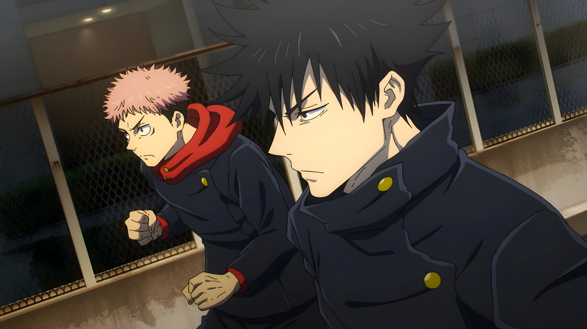

Megumi Fushiguro is quiet, intelligent, and highly tactical. His Ten Shadows Technique makes him one of the most dangerous and mysterious sorcerers of his generation.
Megumi’s strength is built on discipline, judgment, and controlled intensity. His blue-violet shadow theme reflects his mysterious and tactical nature.
Megumi’s theme uses darker violet tones to feel more controlled and mysterious. It is less flashy than Gojo or Sukuna, but still powerful, sharp, and intense.